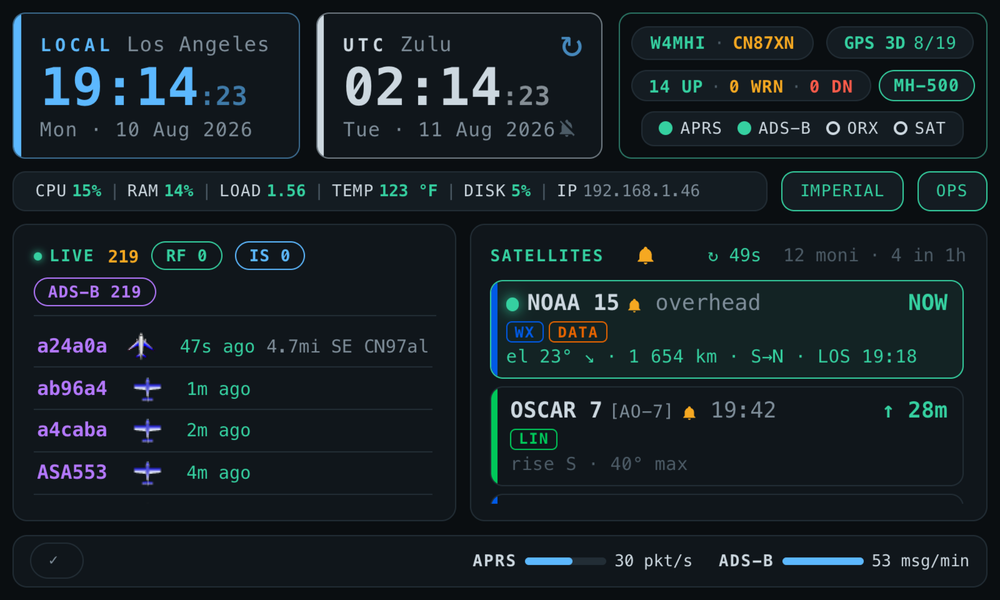
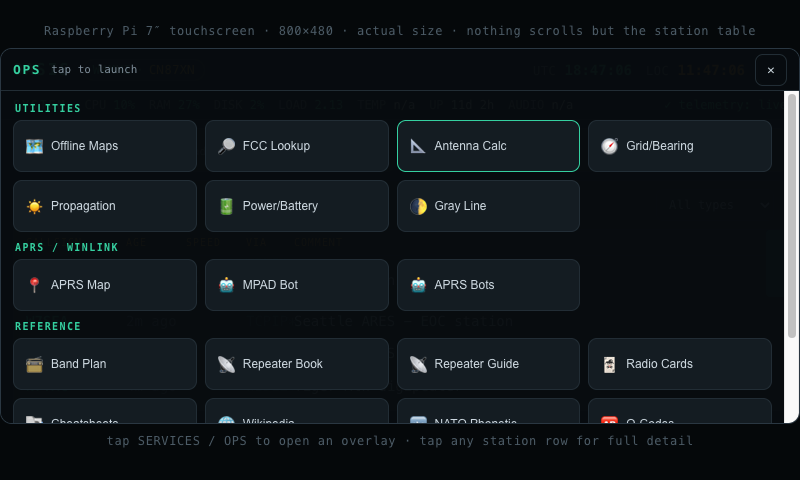

Panel & Kiosk Displays
On-device displays — the CM4Stack panel and the OASIS Dashboard touch kiosk
OASIS is browser-served, so any device is a display — but for an all-in-one box you can also drive an on-device screen: the M5Stack CM4Stack panel, or the OASIS Dashboard / touchscreen kiosk.
OASIS Dashboard / kiosk
oasis-dashboard/dashboard.html is a touch-friendly dashboard tuned for
dedicated panels, with large tap targets and a condensed status strip. It targets two
panel sizes — 800×480 (7″ touchscreen) and
1920×1200 (10″ wide panel). Configure the kiosk automatically:
python3 scripts/enable-autostart-pi.py --resolution 800x480 # 7″ touchscreen
python3 scripts/enable-autostart-pi.py --resolution 1920x1200 # 10″ wide panel
--resolution implies --with-browser, sets the kiosk URL to
http://localhost:8083/oasis-dashboard/dashboard.html?res=<WxH>, enables
touch, and sizes the window to match. (The old --7inch flag still works as an
alias for --resolution 800x480.)
It is not two layouts. The kiosk is one fluid layout
— the root font size is a single clamp() and everything else is in
rem, so the whole page scales with the viewport. There are no
resolution media queries. The page contains exactly one
[data-res] rule in its entire stylesheet, and it gates only the
Jenny avatar card — which appears on 1920×1200 and not on
800×480, because it costs 15% of the width on a small panel and almost nothing on a
large one. That single card is the sole visual difference between the two sizes.
?res= is therefore less a layout switch than a stamp; see the HOME note at
the end of this section.

The main screen packs the whole station onto one panel. Reading down it:
| Block | What it does |
|---|---|
| Clocks | Local and Zulu. Tap either face to cycle its colour through six choices; the two clocks are mutually exclusive, so they can never end up the same colour, and each choice is remembered. The same colours and the same storage keys as the desktop dashboard, so the two agree. |
| Hour bell | Top-right of the Zulu card, immediately left of the reload glyph. Tap to cycle off → strikes the hour → strikes and speaks the hour. Two strikes on the top of the UTC hour, deliberately unlike the satellite alert. Quiet hours are local 22:00–07:00, with a tap-to-override for tonight. A pass alert always wins — the hour is dropped, not queued. See Station Voice. |
| Wi-Fi pill | The SSID when connected (coloured by signal strength, never printed as a number), OASIS in blue when hosting the access point, dim when not connected, hidden entirely on a box with no Wi-Fi support. Tap it to scan, join or forget a network. |
| Health pill | Three counts — N UP · N WRN · N DN — over the canonical service set shared with the desktop dashboard (common/js/service-registry.js). Both screens count the same seventeen services, so they cannot disagree about station health. Not-installed services count as NI and are excluded from the pill. Tap for a read-only list, problems first. |
| SERVICES | Four dots — APRS, ADS-B, SAT, WX — hollow when no dongle is assigned, amber when assigned, green when in use. Every dot is a service OASIS actually routes; OpenWebRX had one until 3.92.0 and lost it along with its assignment, since OASIS never chose its dongle. The whole block is a tap target that opens the hardware console (the HW / SRV matrix), so a device can be rerouted from the panel without a laptop. See Service Operations. |
| System bar | CPU · RAM · LOAD · TEMP · DISK · IP · DATA, packed onto one line. Each value is coloured by threshold. DATA is the data-freshness readout — OK, OLD, ON HOLD, MISSING or OFF, in the same colours the desktop dashboard and Diagnostics use for the same states — and it is tappable: a tap runs an ordinary refresh pass. Ordinary, not forced: a held-back large download (ON HOLD, metered link) stays held back, so a stray thumb on a go-box panel cannot start a 160 MB fetch. TEMP also taps, and it is the panel’s units control: one tap swaps the whole station between imperial and metric — °C/°F, km/mi, km/h — not just the temperature beside it. There is no separate units pill on this screen; the cell whose reading changes is the control. (Satellite range and altitude are always km regardless — see units.) |
| Traffic list | Merged APRS and ADS-B, with three source chips: RF, IS and ADS-B. There is deliberately no APRS chip — RF and IS are the APRS rows, so an APRS chip would duplicate them and could contradict them. |
| Hazard pills | Config-driven from configuration/hazards.json (fire, hurricane, tornado, flood, smoke, skywarn, emergency ship by default), matched on APRS symbol, one pill per hazard actually being heard. Tapping one filters to it. A wildfire reported 100% contained drops out. The old fire-alert count is gone. |
| Emergency chip | Separate from the hazards: public-safety stations heard in the last 48 hours. Also a tappable filter, and mutually exclusive with the hazard pills. |
| Feed flow meters | Two footer meters, APRS and ADS-B, proving the dongles are actually receiving rather than merely running: blue when signal is moving, red when the feed is up but deaf, dim when not running. They yield space to the hazard pills when the footer gets crowded. |
The satellite card
The satellite panel is not just a list of next passes. Each row carries:
- The catalogue name with the amateur designator in brackets after it,
styled down — e.g.
DOSAAF-85 [RS-44]. The orbit-class suffix is stripped. (The spoken name is built separately, so Jenny does not read “bracket R S forty-four”.) - For a bird in pass: live elevation, a rising / setting arrow, and slant range
in km, e.g.
el 37° ↗ · 812 km, patched in place every two seconds. Always km — satellite readouts never follow the units toggle. - A capability rail down the left edge in the same blended colour the satellites map paints, plus capability chips on their own line.
- A
↻ NNscountdown in the header: seconds until the pass list is refetched, green then yellow then red as it runs down. Deliberately not tappable — a display nobody is sitting at must not be pausable into looking live while being stale. - A header count, e.g.
12 moni · 3 in 1h— a readout, not a control.
Beside it is a per-device satellite mute. It silences pass chimes on this panel only — the shack kiosk can be quiet overnight while a laptop still chimes — and it cuts a chime that is already sounding, not just the next one. The per-row bells are live controls: tap one on a pass row, or on the record card beside the bird’s name, to arm or disarm that bird for this panel. Bells are per-device too, so what you arm here says nothing about the laptop — and a freshly reflashed panel starts with nothing armed. See Satellites.
Only the next hour is on the pass list, so most of the roster has no row to tap. Tapping the card’s SATELLITES title (dotted-underlined, unlike the traffic card’s) opens the roster sheet: every bird the station knows, in alphabetical order, one row each, with ARM ALL / ARM NONE in the header. Two controls sit on each row, and they answer different questions.
| Control | Scope | What it does |
|---|---|---|
| MONITOR pill (right) | The whole station | Blue when monitored, dim grey when not. Tapping writes straight to the shared server roster, so the Satellites page and every other screen pick the change up on their next poll — this is how you start watching a new bird without walking to a laptop. |
| Bell (left) | This panel only | Whether that bird wakes this screen. It is greyed out and inert until the bird is monitored, because an alert only ever fires for a monitored bird — a bell armed on an unmonitored one would be swept away within the minute. |
Un-monitoring from the panel can be undone by a laptop. The Satellites page keeps its own copy of your picks and pushes any it thinks the server is missing when it loads, so a bird you dropped here comes back if that page is reloaded before it has seen the change. Drop it from whichever screen you use most, or reload the Satellites page afterwards to confirm it stuck.
Jenny
On the 1920×1200 layout, and only once a speech engine is actually installed, an avatar card appears: Jenny, the face of the Piper neural voice. She sits dormant and lights up only while speaking — a satellite pass announcement, or the spoken hour. Tap to wake her and she introduces herself; tap again while she is talking to stop her. The video clip itself carries no audio; everything spoken comes from the speech service. See Station Voice.
The OPS launcher
Tapping OPS opens a full-screen launcher, now seven sections. Everything opens in a new tab.
| Section | Items |
|---|---|
| OASIS | Handbook, Setup, Diagnostic, SSH Terminal. |
| Monitor | Traffic Map, Satellites. |
| ICS Forms | ICS-205, ICS-213, ICS-214, ICS-309. |
| Winlink & APRS | Winlink Mail, Radio Settings, GrayWolf web UI, GrayWolf handbook. |
| Tools | FCC Lookup, Antenna Calculator, Power & Battery, Band Plan, Solar / Propagation, Gray Line, Grid / Bearing, File Browser. |
| Radio Ref | Repeater Guide, Radio Cards, Repeater Book, Radio Manuals, Wikipedia. |
| Operation | Net Logger, NATO Phonetic, Q-Codes, Procedure Words, RST, ITU Prefixes. |

The oasis_layout stamp
Opening the kiosk with ?res=<WxH> writes that value to
localStorage as oasis_layout. Every page in the suite links
HOME to /, and / is a tiny redirect that reads that key: with a
stamp it sends you to the kiosk, without one to the desktop
index.html. So on a panel, every ⌂ HOME link in every
tool comes back to the kiosk rather than dumping you into a desktop dashboard
you cannot use with a finger.
Reaching the desktop dashboard directly clears the stamp — a deliberate escape
hatch, so the redirect can never trap a browser in a loop back to the kiosk. That is why
the launch scripts open /index.html explicitly rather than bare
/.
CM4Stack panel
For an M5Stack CM4Stack (Pi CM4) with the built-in ST7789V2 SPI panel, GT911 touch, and GPIO fan, the on-device panel display is configured with:
python3 features/cm4stack/install-cm4stack.py # auto-detect the setup phase
python3 features/cm4stack/install-cm4stack.py --dry-run # preview config.txt changes
It runs in two phases and requires a reboot between them: first it patches
config.txt and sets headless boot (exit code 10 = reboot required);
after reboot it builds the GT911 touch-fix overlay and installs
oasis-panel.service. Exit codes: 0 done · 10
reboot required · 1 error.
Troubleshooting
| Symptom | Cause & fix |
|---|---|
| Two kiosks are running and everything looks half-broken | The highest-value failure on this page, and deliberately non-obvious. On Pi OS
Trixie the autostart installer wrote both an XDG autostart entry and a
labwc autostart line — and labwc honours both, so a station installed before
this was fixed runs two stacked Chromium kiosks. You only ever see
the top one. Symptoms: muting a satellite alert leaves the hidden window still
chiming; a filter you tapped does not stick; CPU, RAM and API load are all roughly
doubled for no visible reason. Check with
pgrep -c chromium (expect 1 kiosk process tree, not 2 sets),
ls ~/.config/autostart/ and
grep chromium ~/.config/labwc/autostart — if both name a kiosk,
that is the bug. The fix is to re-run the autostart installer
(scripts/enable-autostart-pi.py), which now writes only one. |
| The kiosk pins a CPU core / runs hot | Usually a Chromium crash-loop (watch for crashpad_handler). The kiosk already launches with --use-gl=angle --disable-breakpad, which keeps a stuck Pi kiosk down from ~100% of one core to ~25%. If a crash-loop returns, fall back to --disable-gpu (software rendering, stable). Don’t use --use-gl=egl on newer Pi GPU drivers (vc4-kms-v3d) — it leaves MapLibre’s WebGL context uninitialised and the live map renders blank. |
| Blank or wrong-size screen | Display/rotation config. Check the kiosk service and the panel’s resolution; the dashboard view is /oasis-dashboard/dashboard.html?res=<WxH>. |
| Touch doesn’t register | The touchscreen overlay/driver isn’t loaded for that panel — enable it in config.txt and reboot. |